Word-error rate against the Fed’s transcript adist() · normalization · four runs
Today: what was said, by whom and when, from the words and their times. How it was said is a separate question, answered from the sound.
The project folder
Unzip 19-audio.zip and open 19-audio.Rproj, so R starts in the project folder. Every path on the slides is relative to it.
19-audio/, as its README.md describes it
19-audio/ data/ the transcript PDF and five clips; the full 44-min recording (85 MB) is NOT in the zip replies/ the two models' replies, as returned code/ the R scripts, in lecture order: 0_sound.R to 6_wer.R, align.R data_clean/ what the scripts compute: words.rds, seg.rds, w.rds (saved R tables), utterances.csv logs/ run times, printed output tools/ SETUP.md and the Python scripts that made the replies
The recording: the Fed’s press conference of 1 Feb 2023, 44 min. replies/ holds both models’ replies, made before class in Python. In class everything runs in R. The scripts in code/ follow the slides and install their packages if missing.
1 · Foundations of sound data
Sound is a wave
Sound is a wave of air pressure. A vibrating object, such as the vocal folds, pushes and pulls the air beside it. Each layer of air pushes the next, so the swings in pressure travel outward.
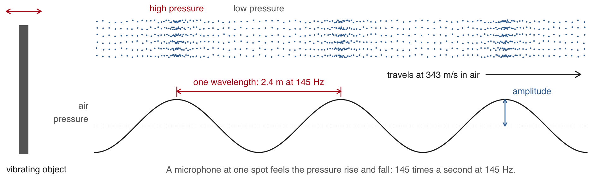
Frequency: vibrations a second, in hertz (Hz). Powell’s vocal folds vibrate about 145 times a second in “afternoon”.
Amplitude: how far the pressure swings from normal, heard as loudness. Each bit of air moves back and forth in place and passes the push on.
How sound travels through a medium
Sound needs something to carry the pushes: air, water, a wall. Its speed depends on what carries it, and nothing carries it in a vacuum.
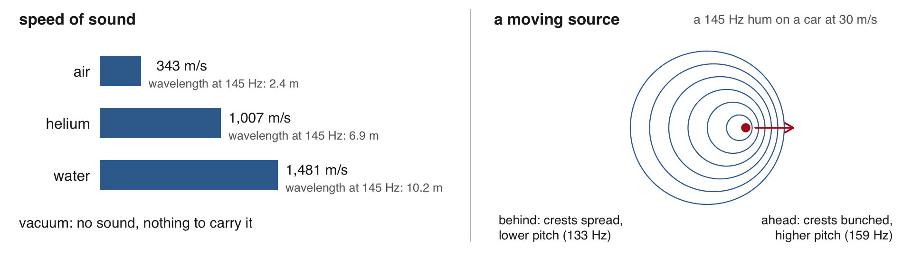
Helium: sound travels about 3 times faster. The pitch stays, but the throat’s resonances rise, so the voice sounds thinner.
Water: about 4 times faster. Ears built for air hear it poorly and struggle to tell where it comes from.
Motion: a source coming toward you bunches the crests and sounds higher; going away, lower (the Doppler effect).
A recording is a vector of numbers
A recording is one long vector of numbers. Played back, they give the whole sound up to 8,000 Hz. Here: the first 2 minutes of the Fed’s press conference of 1 Feb 2023.
code/0_sound.R; installs tuneR if missing
library(tuneR)wav <-readWave("data/clips/open2min.wav")wav@samp.rate # samples a second#> [1] 16000length(wav@left) # samples in 2 minutes#> [1] 1920000i <-112800+1:800# 50 ms from 7.05 swav@left[i[1:6]] # the first six#> [1] 206 41 280 1 1 352plot((i -1) /16000, wav@left[i], type ="l",main ="\"Good\", 7.05 to 7.10 s",xlab ="seconds", ylab ="amplitude")
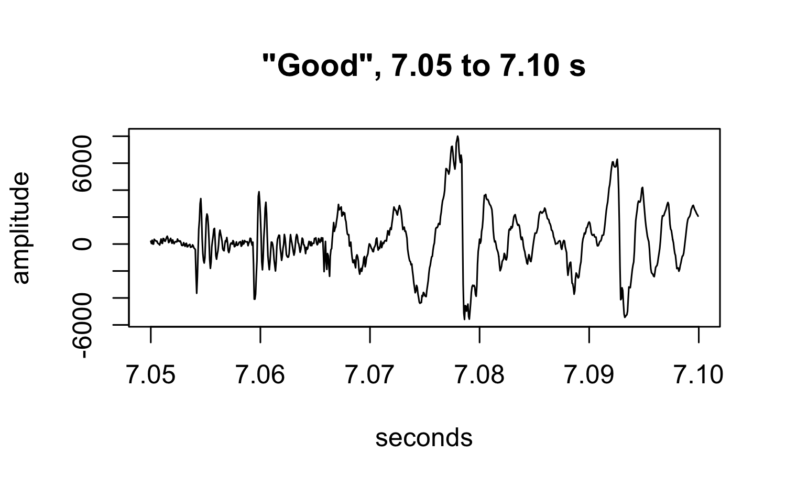
Sample: one measurement of the microphone’s voltage at one instant, stored as a whole number (not a statistical sample).
Sampling rate: measurements per second, in hertz (Hz, per second); 16,000 here.
Plotted: Powell’s “Good”. Two minutes hold 1,920,000 numbers; the 44:37 conference, about 42.8 million.
Loudness is amplitude
Amplitude is the size of the swings away from 0, heard as loudness. A louder sound swings further, both ways.
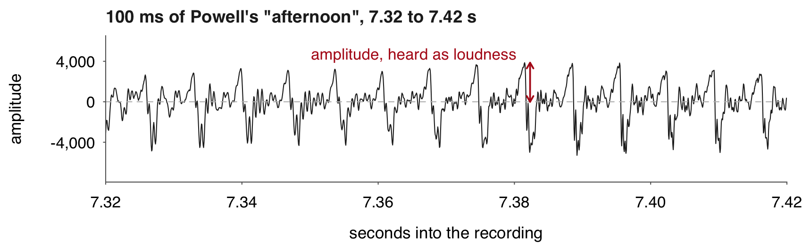
Chair Powell’s “afternoon”, 7.32 to 7.42 s of the Fed’s press conference of 1 Feb 2023, a stretch where his voice is steady.
Amplitude: the stored number itself, a position on a scale of whole numbers from −32,768 to 32,767 (16 bits). It has no physical unit.
Silence sits at 0. Powell’s “Good” reaches about 8,000, a quarter of the loudest the file can hold.
Pitch is frequency
Pitch is how many times a second the wave repeats, its frequency, in hertz. One cycle of “afternoon” lasts 6.9 ms, so its pitch is 145 Hz.
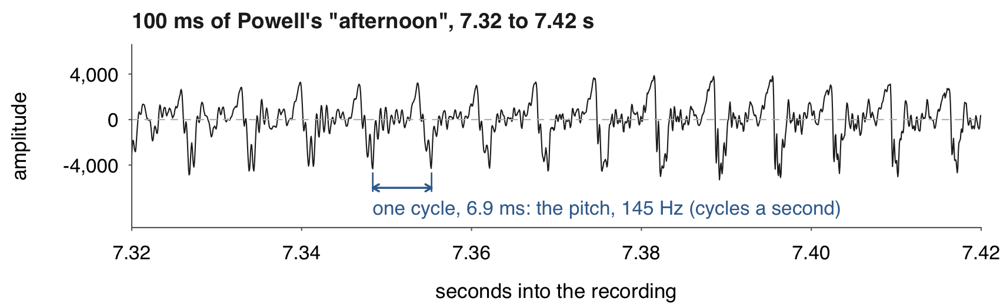
Chair Powell’s “afternoon”, 7.32 to 7.42 s of the Fed’s press conference of 1 Feb 2023: about 14 cycles.
The vocal folds open and close at that rate: 85 to 180 times a second for a man.
We hear about 20 to 20,000 Hz. Speech sits almost all below 8,000 Hz, the highest a file of 16,000 samples a second holds.
Timbre is the mix of overtones
Timbre is the mix of overtones a voice carries above its pitch. It makes vowels differ and voices recognisable.
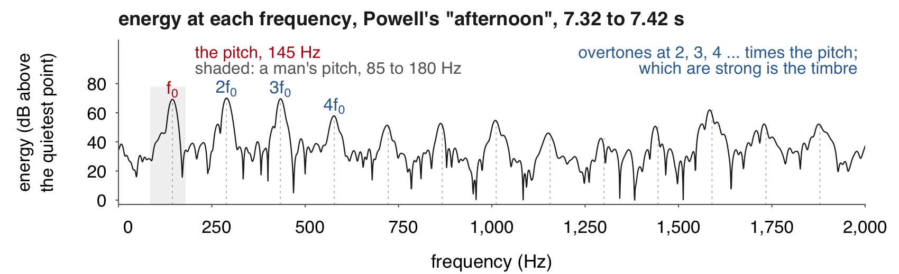
Chair Powell’s “afternoon”, 7.32 to 7.42 s, as the energy at each frequency (the spectrum), in decibels (dB, a log scale) above the quietest point shown. Its first peak, the pitch, sits at 145 Hz.
Overtone: a weaker wave sounding with the pitch, at a whole multiple of it: 290, 435, 580 Hz … over 145 Hz. The mouth boosts some, damps others.
Time, the length of sounds and pauses, is the fourth dimension. The rest of the session measures it.
From samples to a picture of sound
A speech-to-text model first turns the vector into a spectrogram: the same sound, as energy by frequency over time. It measures the energy at each frequency in 25-ms windows, one every 10 ms.
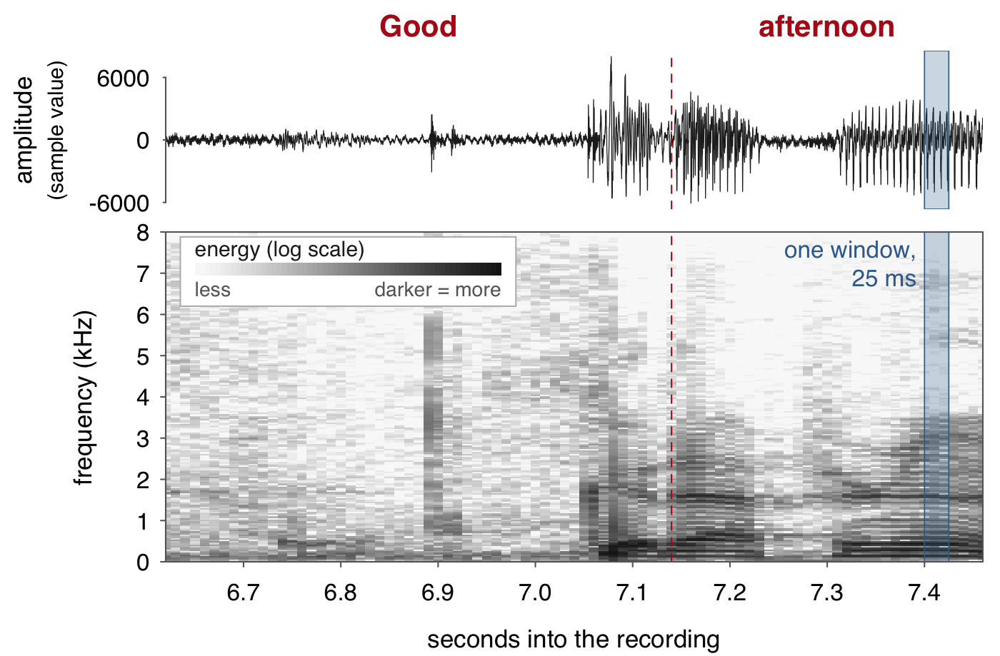
Frequency: how many times a second the pressure swings, in Hz.
Window: 25 ms, 400 samples, measured as one.
Mel scale: frequencies spaced the way the ear hears them, pooled into 80 bands.
One second: 100 windows × 80 bands (128 in the large model).
Chair Powell’s “Good afternoon”, 6.62 to 7.46 s of the Fed’s press conference of 1 Feb 2023. Word times and the dashed boundary are the model’s. The shade is the energy at that frequency in that window, on a log scale. Darker is louder.
2 · Recorded speech as research data
When a transcript is not enough
With a reliable transcript, a speech-to-text model adds nothing to the words. It is run in four cases.
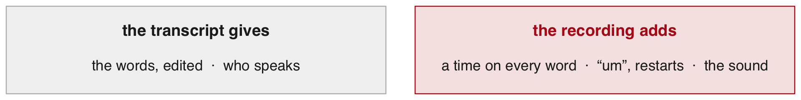
No transcript: interviews, focus groups, hearings, radio, archives, most recordings.
A sanitized transcript: fillers, restarts and stutters edited out, as in the Fed’s.
No times: pauses and speaking rate need timestamps, which typed transcripts never carry.
How it was said: pitch, energy and tone, which no transcript holds.
Today works on the first three cases. The fourth needs the sound itself.
Machine transcripts of political speech
Much political speech is recorded but never typed. Proksch, Wratil and Wäckerle turned it into text by speech recognition, then into each speaker’s position by a text model.
Wordfish: a text model. Speakers who use the same words more often land close together on its scale.
Word-error rate: wrong, missing and extra words per word of the true text.
Police body-camera footage as data
Voigt et al. had the body-camera footage of 981 traffic stops in Oakland transcribed. Officers spoke less respectfully to Black drivers than to white drivers.
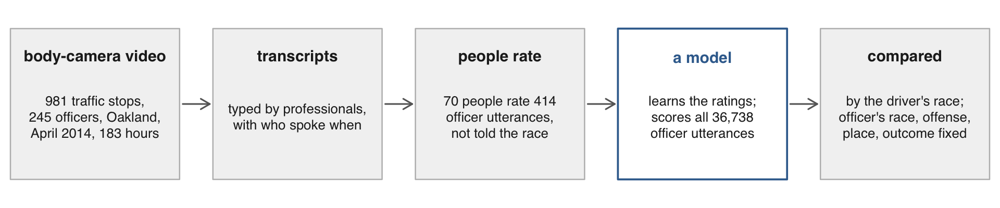
Voigt et al. (PNAS, 2017): the gap holds with the officer’s race, the offense, the place and the outcome of the stop held fixed.
The transcribers did both of this session’s jobs by hand: the words, and who spoke when.
The Fed press conference of 1 February 2023
This session analyzes one recording: what Chair Powell and the reporters said at the Fed’s press conference of 1 Feb 2023. It checks everything it builds against the Fed’s own transcript. A turn is one person’s talk until another speaks. The transcript tags 76.
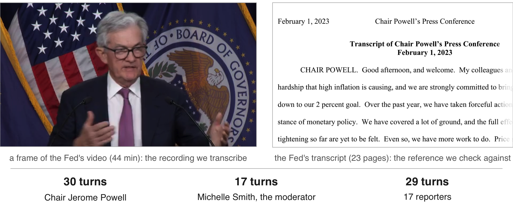
After each meeting of the FOMC, the Fed’s rate-setting committee, Chair Powell reads a statement on camera. He then answers reporters for about 40 minutes. Michelle Smith, the moderator, calls each reporter by first name.
3 · Speech models
Kinds of audio models
Each kind of model does a different job on a recording. Most read speech; the last reads every other sound. This session uses the first two.
Speech-to-text: turns the sound into words, with a start and end time for each.
For transcripts, word counts and speaking rates.
Speaker labels (diarization): find where the voice changes; label each voice.
For turns: who said each word.
Forced alignment: takes an existing transcript and finds when each word is said.
For timing a trusted text, such as the Fed’s.
Translation: writes speech in another language, directly or through a transcript.
For sources in a language you do not read. The transcript lets you check it.
Voice measures: track pitch and loudness over time, or score emotion.
For how something was said, beside what was said.
Chat models with audio: answer a question about a recording, in prose.
For a quick summary; its times and labels are rough.
Sound events: label sounds other than speech, such as cars, birdsong or a dog barking, with their times.
For counts of events: traffic, wildlife, noise.
From the spectrogram to words
The speech-to-text model reads the spectrogram and writes like a language model: it predicts each word from those before.
One part reads the spectrogram; the other writes one word at a time, to fit the sound and the words already written.
Where the sound is hard to read, the words already written have more influence. Each repeat makes the next likelier, so a loop keeps going. Example below.
Small and large: one model in two sizes. The large has 11 times the parameters: slower, but better on unclear sound.
Example: Powell at 35:22, as each model wrote it (Python, before class; replies/words.json, words_base.json)
large but I think we, we're going to be cautious about declaring victory and, you know, sending signals that we think ...small but I think we we're going to be cautious about about declaring victory and you know that's not going to be a good example of the fact that we are going to be cautious about the fact that we are going to be cautious about the declaring victory and ... from 35:33 to the end: "we are going to be cautious about the fact that", repeated
The large one matches the Fed’s transcript.
4 · Who said what, and when
What the models return, and the table we build
This part uses two different models: a speech-to-text model, which wrote every word with its time, and a speaker-label model, which marked which voice talks when. Both ran before class; this part joins their replies.
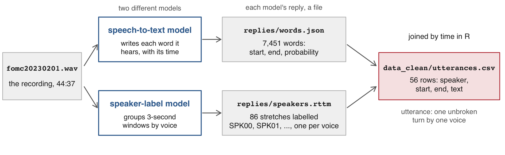
data_clean/utterances.csv, 3 of its 56 rows (times in seconds; text cut at 45 characters)
speaker start end text1 SPK00 11.10 417.73 colleagues and I understand the hardship that2 SPK02 425.29 450.75 Chris Rugeber, Associated Press. Thank you fo3 SPK00 452.63 490.93 So it is important that overall financial con
The question for the rest of the session: how far can this table be trusted?
The two replies, made in Python before class
Two Python scripts wrote replies/ before class, in about 6 minutes. They are not run in class. Everything after them runs in R.
code/python/1_words.py: the speech-to-text reply, replies/words.json (5 min)
import json, mlx_whisperreply = mlx_whisper.transcribe("data/media/fomc20230201.wav", path_or_hf_repo="mlx-community/whisper-large-v3-turbo", # the large model language="en", word_timestamps=True) # a time on every wordjson.dump(reply, open("replies/words.json", "w"))
code/python/2_speakers.py: the speaker labels, replies/speakers.rttm (35 s), in four steps
1. 30-ms frames marked speech or not; 3-s windows, one every 1.5 s, kept if at least half speech2. one voice embedding per window, from a model trained on thousands of voices3. the embeddings clustered: the windows of one cluster share a label4. each window labels its middle 1.5 s; neighbours with the same label merge into a stretch
Reading the speech-to-text reply in R
The speech-to-text reply is one JSON file: the whole text, then segments, each with its words and their start, end and probability. fromJSON() reads it; one line stacks the 1,711 segments’ words into 7,451 rows.
code/1_words.R, in the 19-audio folder (open 19-audio.Rproj first); the script installs jsonlite if it is missing
# stt$segments: one row per segment; its words column holds a small table per rowwords <-do.call(rbind, stt$segments$words) # stack the 1,711 per-segment word tableswords <- words[, c("word", "start", "end", "probability")]words$word <-trimws(words$word) # the model puts a space before each worddim(words)
#> [1] 7451 4
code/1_words.R; words from above
head(words, 4)
#> word start end probability
#> 1 Good 6.62 7.14 0.5576172
#> 2 afternoon 7.14 7.46 0.9960938
#> 3 and 7.46 8.14 0.6811523
#> 4 welcome. 8.14 8.40 0.9970703
stt, short for speech to text, holds the whole reply. words has one row per word. Probability is the model’s own rating of the word it chose.
The reply beside the Fed’s transcript
The speech-to-text model’s word count comes close to that of the Fed’s transcript of its press conference of 1 Feb 2023.
The model’s reply
The Fed’s transcript
Words
7,451
7,365
“you know”
70
75
The transcript’s count leaves out its page headers and its speaker tags (“CHAIR POWELL.”). “You know” is a filler phrase, counted per answer later in the session. Spelling differs: the model writes “2%” where the Fed writes “2 percent”.
What a speaker-label model returns
The speaker-label model returns stretches with a start, a duration and a label such as SPK00, and no names.
code/2_speakers.R, in the 19-audio folder; replies/speakers.rttm is the speaker-label model's reply
RTTM: plain text, one line per stretch, ten columns; start in 4, duration 5, label 8.
86 stretches, 19 labels for the Fed’s press conference of 1 Feb 2023: as many as the people its transcript names. Made in 58 s on a laptop, with no account.
How speaker labels are made
The speaker-label model gives windows that sound alike one label. A voice shorter than a window gets no label of its own.
Window: a 3-second stretch of the recording, one every 1.5 s. A window under half speech gets no label.
Voice embedding: numbers that sit close for the same voice; clustering groups them. Labelled stretch: consecutive windows with the same label, merged.
At 15:23 the moderator’s half-second “Howard” sits in four seconds of quiet and is dropped. At 21:38 a reporter’s “Yes” inside Powell’s window takes his label.
Speaker labels across the conference
In the Fed’s press conference of 1 Feb 2023, SPK00 (Chair Powell) holds the long stretches. The moderator’s name call “Howard.” at 15:23 falls in a 4.5-s gap whose windows were dropped. SPK07, the reporter’s label, follows it. Windows overlap, so they are drawn on two rows.
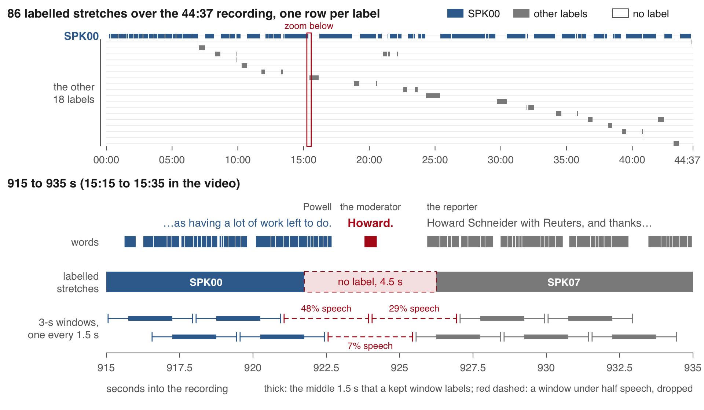
A speaker label for every word
Each of the 7,451 words of the Fed’s press conference of 1 Feb 2023 takes the label of the stretch holding its midpoint. 267 words (3.6%) fall before the first stretch or in a gap and get none.
code/3_join_turns.R, in the 19-audio folder; needs words (the 7,451-word table) and seg (the 86 stretches)
mid <- (words$start + words$end) /2# a word goes with the stretch holding most of iti <-findInterval(mid, seg$start) # the last stretch that starts before the midpointi[i ==0] <-NA# before the first stretchi[!is.na(i) & mid > seg$end[i]] <-NA# past that stretch's end, in a gapwords$speaker <- seg$speaker[i]c(no_label =sum(is.na(words$speaker)), share =round(mean(is.na(words$speaker)), 3))#> no_label share #> 267.000 0.036words[words$start >923& words$start <926.5, ]#> word start end probability speaker#> 2442 Howard. 923.79 924.23 0.9584961 <NA>#> 2443 Howard 925.93 926.37 0.6479492 <NA>#> 2444 Schneider 926.37 926.63 0.6259766 SPK07
The stretches come from the speaker-label model. probability is the speech-to-text model’s own rating of each word. The rows from 923 to 926.5 s hold the moderator’s name call “Howard.” and the reporter’s own “Howard Schneider”. Neither “Howard” has a label.
Turns numbered with cumsum()
A turn starts wherever the label changes. A running total of those changes numbers the turns: 56 in all, 27 of them Chair Powell’s.
code/3_join_turns.R, in the 19-audio folder; needs words, the 7,451-word table with its speaker labels
w <- words[!is.na(words$speaker), ] # the 7,184 labelled wordsnew_turn <-c(TRUE, w$speaker[-1] != w$speaker[-nrow(w)]) # TRUE where the label changesw$turn <-cumsum(new_turn)max(w$turn)
#> [1] 56
turn_label <-tapply(w$speaker, w$turn, unique) # one label per turnsort(table(turn_label), decreasing =TRUE)[1:4]
powell <-names(sort(table(w$speaker), decreasing =TRUE))[1] # the label with the most wordspowell
#> [1] "SPK00"
cumsum() is a running total in which TRUE counts as 1. Labels A A B B B A give changes TRUE FALSE TRUE FALSE FALSE TRUE, so turns 1 1 2 2 2 3. tapply() splits a column by a grouping and applies a function to each piece. powell is SPK00, the label with the most words: Chair Powell’s.
Turn counts against the transcript
In the Fed’s press conference of 1 Feb 2023, the speaker labels give Chair Powell 27 turns against the transcript’s 30. The moderator gets 0 against 17. Each of her name calls is shorter than the labels’ 3-second window.
Speaker
Transcript
From labels
Why, and when to listen in the video
Powell
30
27
Two answers merged. At 21:38 a reporter’s 0.5-s “Yes.” inside a window Powell fills took his label. At 28:47 the 4.3-s follow-up “Can we get there with the 5%?” got none. “Go ahead.” at 09:48 was never written by the speech-to-text model.
Moderator
17
0
16 name calls written (“Howard.” at 15:23), all in gaps between labelled stretches. “Colby, and then Howard.” at 11:41 was never written: 6.6 s with no words.
Reporters
29
26 + 3 strays
Two pairs of reporters share a label. Three stray labels, each on one to four words, fall at 09:53, 40:48 and 44:31.
Michelle Smith, the moderator, calls each reporter by first name. Of her 16 written name calls, 13 last 0.6 s or less. The longest, “Let’s go to Brendan for the last question.” at 43:03, lasts 1.8 s.
The utterance table with tapply()
One tapply() per column over the turn number collapses w, the 7,184 labelled words, into utt, the utterance table. It has 56 rows of speaker, start, end and text.
code/4_utterances.R, in the 19-audio folder; needs w, the labelled words with their turn numbers
utt <-data.frame(speaker =tapply(w$speaker, w$turn, unique),start =tapply(w$start, w$turn, min),end =tapply(w$end, w$turn, max),text =tapply(w$word, w$turn, paste, collapse =" ")) # a turn's words as one stringnrow(utt)
#> [1] 56
write.csv(utt, "data_clean/utterances.csv", row.names =FALSE)first <-head(utt, 5); first$text <-substr(first$text, 1, 45) # substr(): characters 1 to 45print(first, right =FALSE)
#> speaker start end text
#> 1 SPK00 11.10 417.73 colleagues and I understand the hardship that
#> 2 SPK02 425.29 450.75 Chris Rugeber, Associated Press. Thank you fo
#> 3 SPK00 452.63 490.93 So it is important that overall financial con
#> 4 SPK03 497.09 519.65 Hi, Chair Powell. Thank you for taking our qu
#> 5 SPK00 521.31 587.21 I would say it is a good thing that the disin
paste(collapse = " ") glues a turn’s words into one string. The pauses, rates and counts that follow read the saved CSV. Names come from the text. The label with the most words opens with “Good afternoon”: Chair Powell. “Chris Rugeber, Associated Press” introduces himself.
The 30-second clip transcribed in R
code/5_transcribe.R turns sound into words in R with the whisper package. On the 30-second clip, Powell’s answer at 16:09, the tiny model takes about 4 s.
code/5_transcribe.R, in the 19-audio folder; the first run downloads torch's library and the model (151 MB) once
want <-c("whisper")need <- want[!(want %in%installed.packages()[,"Package"])]if (length(need)) install.packages(need)rscript <-file.path(R.home("bin"), "Rscript") # torch's own library, once, in a separate Rif (system2(rscript, c("-e", shQuote("quit(status = !torch::torch_is_installed())"))) !=0)system2(rscript, c("-e", shQuote("torch::install_torch()")))library(whisper)options(whisper.consent =TRUE) # lets it download the model file onceout <-transcribe("data/clips/schneider30.wav", model ="tiny", language ="en")cat(strwrap(out$text, 80), sep ="\n")
What the last line printed on the instructor's laptop, 3 Nov 2026
So I guess I would say it this way. We can now say I think for the first timethat the disinflationary process has started. We can see that and we see itreally in goods prices so far. Good prices is a big sector. ...
Transcribe the 30-second clip yourself and set it beside the Fed’s text of the same passage. 5 minutes.
Run code/5_transcribe.R. It prints the model’s words, then the Fed’s.
Find three places where the two differ.
Set model <- "base" and run it again. Which differences remain?
Tiny writes “Good prices” for “Goods prices”, and “supply change” for “supply chains”. It adds “around a quarter of them” at the cut.
Both sizes drop Powell’s restarts (“We—this is”, “We—you know”) and write “to the very beginning” for “since the very beginning”.
Base fixes “Goods prices” but keeps “supply change”.
5 · Pauses, speaking rate and “you know”
The pause before an answer
utt is the utterance table built in R a few slides back, from the two replies (code/4_utterances.R saved it). The pause before a turn is its start minus the previous row’s end.
code/6_pauses.R, in the 19-audio folder; reads data_clean/utterances.csv, which code/4_utterances.R wrote
utt <-read.csv("data_clean/utterances.csv")utt$words <-lengths(strsplit(utt$text, " ")) # words per turnpowell <-names(which.max(tapply(utt$words, utt$speaker, sum))) # the label with the most wordsclock <-function(s) sprintf("%02d:%02d", floor(s /60), floor(s %%60)) # seconds to mm:ss# x <- c(10, 20, 30); c(NA, x[-3]) gives NA 10 20: the previous row's valueutt$pause <- utt$start -c(NA, utt$end[-nrow(utt)]) # this start minus the previous endhead(utt[, c("speaker", "start", "end", "pause")], 6)
The pause before an answer: from the end of the question to the start of the answer. clock() turns seconds into mm:ss, the video’s clock. The first question starts 7.56 s after Chair Powell’s opening statement ends. The moderator’s name call “Chris Rugeber.”, with no speaker label, sits inside the gap.
Speaking rate per turn
Words divided by a turn’s duration give its speaking rate. Chair Powell’s median turn runs at 3.0 words a second, the reporters’ at 3.2.
code/6_pauses.R; needs utt (the utterance table, one row per turn) and powell (SPK00, Chair Powell)
Speaking rate: words per second within a turn. ifelse() picks one of two values per row. tapply() takes each group’s median. Powell first reads a prepared opening statement, 960 words in 407 s, 2.36 a second, then answers questions. A turn that merges two answers (28:47) also spans the question between them, so it reads slower.
Counting “you know” in each answer
A filler phrase counted per turn separates read speech from spoken. In the speech-to-text model’s text, Chair Powell’s 960-word opening statement has none; his 26 answers have 63.
code/6_pauses.R; needs utt (one row per turn), powell (SPK00, Chair Powell) and clock() (seconds to mm:ss)
mine <- utt[utt$speaker == powell, ]hits <-gregexpr("\\byou know\\b", mine$text, ignore.case =TRUE) # every match in each turnmine$you_know <-lengths(regmatches(mine$text, hits)) # how many per turnc(opening = mine$you_know[1], answers =sum(mine$you_know[-1]),per_100_words =round(100*sum(mine$you_know[-1]) /sum(mine$words[-1]), 2))
barplot(100* mine$you_know / mine$words, names.arg =clock(mine$start), las =2,ylab ="\"you know\" per 100 words", main ="Each of Powell's 27 turns, by its start time")
A filler phrase is said while thinking and carries no content. gregexpr() finds every match, regmatches() pulls them out, lengths() counts them. \\b marks a word boundary. Over the conference the speech-to-text model wrote 70 and the Fed’s transcript keeps 75. “Um” and “uh” are not counted: the models leave them out, as their training transcripts do.
The five longest pauses, listened to
All five longest pauses before Chair Powell’s answers in utt, the utterance table, hold words with no speaker label. The longest real silence before an answer is 4.58 s, at 43:38.
At
Pause in utt
Silence between words
Words in the gap with no label
22:58
6.56
3.14
7: “on the committee. So, the committee, obviously,”
43:38
5.90
4.58
3: “summer? Look, it’s”
37:03
4.66
2.10
4: “outcome? I’m not particularly”
23:45
4.34
1.26
6: “between moves? I mean, I think”
38:30
3.06
2.18
3: “on the economy?”
The pause in utt runs from the question’s last labelled word to the answer’s first. Words the labels missed sit inside it, in 16 of his 26 answers. The silence is the largest gap between consecutive words there. A long pause is played back, and its words read, before it is reported.
The pause before every Powell answer
For Chair Powell’s 26 answers, the silence between words is the number to report: median 1.07 s against the table’s 1.76 s. The table’s gaps hold words with no speaker label, which fell between labelled stretches.
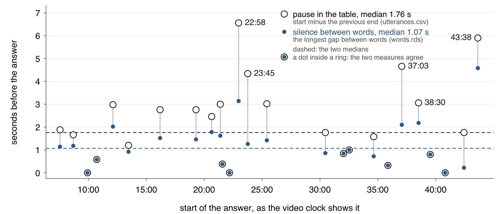
Open circles come from data_clean/utterances.csv, the utterance table. Blue dots come from data_clean/words.rds, the 7,451-word table that code/1_words.R saves, with each word’s start and end.
Chair Powell’s 26 answers in the Fed’s press conference of 1 Feb 2023.
6 · Word-error rate against the Fed’s transcript
The Fed’s passage beside the model’s words
On a 30-second clip, the large speech-to-text model’s 104 words differ from the transcript’s 105 in three places. The transcript’s text is the reference transcript, the text treated as correct.
So I guess I would say it this way. We can now
say, I think, for the first time that the
disinflationary process has started. We can see
that. And we see it, really, in goods prices so
far. Goods prices is a big sector. We—this is
what we thought would happen since the very
beginning, and now here it is actually
happening, and for the reasons we thought.
We—you know, it's supply chains, it's
shortages, and it's demand revolving back
towards services. So this is a good thing. This
is a good thing. But that's, you know, around a
quarter of the
The Fed’s transcript, page 9: replies/clip30_fed.txt
So I guess I would say it this way. We can now
say, I think, for the first time that the
disinflationary process has started. We can see
that. And we see it really in goods prices so
far. Goods prices is a big sector. This is what
we thought would happen since the very
beginning, and now here it is actually
happening. And for the reasons we thought, you
know, it's supply chains, it's shortages, and
it's demand revolving back towards services. So
this is a good thing. This is a good thing. But
that's, you know, around a quarter of the
time.
What the large speech-to-text model wrote from the clip: replies/clip30_turbo.json
The clip: Chair Powell answering Howard Schneider of Reuters, 16:09.6 to 16:39.6 of the Fed’s press conference of 1 Feb 2023. It ends mid-sentence. Neither text holds an “um”. The transcript’s editors kept two restarts, “We—”, that the model dropped. The model guessed “time.” at the cut. Punctuation and capitals are not counted.
Counting word edits with adist()
Word-error rate: the substitutions, deletions and insertions that turn the reference into the model’s text, over the reference’s word count. adist() counts them; one character per word makes it count words.
code/7_wer.R; base R only
word_edits <-function(ref, hyp) { vocab <-unique(c(ref, hyp)) # every distinct word r <-intToUtf8(match(ref, vocab) +1000) # one character per word, past the ordinary letters h <-intToUtf8(match(hyp, vocab) +1000)adist(r, h, counts =TRUE)}ref <-strsplit("so we can now say that the process has really started", " ")[[1]]hyp <-strsplit("so we can say that the processes has really really started", " ")[[1]]d <-word_edits(ref, hyp)attr(d, "counts")[1, 1, ]#> ins del sub #> 1 1 1sum(attr(d, "counts")) /length(ref)#> [1] 0.2727273attr(d, "trafos")#> [,1] #> [1,] "MMMDMMMSMIMM"
Edit distance: the fewest substitutions, deletions and insertions that turn one sequence into the other. ref is the reference, hyp the model’s text (its hypothesis). match() numbers each word, and intToUtf8() turns each number into one character. The path in "trafos" reads M match, S substitution, D deletion, I insertion.
Normalizing both texts before scoring
Both texts are written by the same rules before counting, and those rules decide the score.
code/7_wer.R, in the 19-audio folder; base R
to_words <-function(x) { x <-tolower(paste(x, collapse =" ")) x <-gsub("[-/—–]", " ", x) # dashes and slashes split words: "We—this" -> "we this" x <-gsub("[^a-z0-9' ]", "", x) # other punctuation dropped; the straight apostrophe staysstrsplit(trimws(x), " +")[[1]]}to_words("We—this is what we thought. We—you know, it's P.C.E.")
Normalization: writing both texts by the same rules before comparing them. The transcript PDF prints a curly apostrophe (’) where the speech-to-text models write a straight one ('). Left curly, the punctuation rule drops it, and “it’s” becomes “its”. On the 30-s clip, Powell’s answer at 16:09, the large model’s 3 edits (0.029) then become 7 (0.067). replies/clip30_fed.txt, the transcript’s text for the clip, ships with straight apostrophes.
Four runs scored on the 30-second clip
On the 30-s clip, Powell’s answer at 16:09, the large model makes 3 edits against the Fed’s 105-word passage; the small one makes 9.
code/7_wer.R; needs jsonlite, ref (the 105 reference words), to_words() and word_edits() from the slides before
runs <-c(small ="replies/clip30_base.json", small_prompt ="replies/clip30_base_prompt.json",large ="replies/clip30_turbo.json", large_prompt ="replies/clip30_turbo_prompt.json")hyps <-lapply(runs, function(f) to_words(fromJSON(f)$text)) # one word vector per filescore <-function(h) { k <-attr(word_edits(ref, h), "counts")[1, 1, ]c(model_words =length(h), k, rate =round(sum(k) /length(ref), 3)) }t(sapply(hyps, score)) # one row per run
#> model_words ins del sub rate
#> small 99 0 6 3 0.086
#> small_prompt 39 1 67 0 0.648
#> large 104 1 2 0 0.029
#> large_prompt 109 4 0 1 0.048
Small (clip30_base.json) and large (clip30_turbo.json) are two sizes of one speech-to-text model. word_edits() counts ins (words added), del (reference words left out) and sub (words replaced). rate is their sum over the 105 reference words. A prompt is text put in front of the model before it writes. The small_prompt run stopped writing at 12.7 s, so 67 reference words are deletions.
How far the table can be trusted
The utterance table, built in this session from the two models’ replies, has one row per turn (one speaker’s stretch). On a 30-s clip it gets 97 words in 100 right. The measures on words and times stand. Its speaker labels miss every turn shorter than 3 seconds.
What was measured
Against what
Result, the table’s number first
Words
the Fed’s own transcript: its text of the 30-s clip (Powell’s answer at 16:09) and its word count over the conference
word-error rate 0.029; 7,451 words against 7,365; “you know” 70 against 75
Turns
the transcript’s speaker tags
Powell, the Fed chair, 27 turns of 30; the moderator, who calls on the reporters, 0 of 17; 267 words with no label (3.6%)
Pauses
listening, and the gaps between words
the five longest are gaps in the labels; median 1.76 s by the table, 1.07 s by the words
One caveat: the word times are the model’s reconstruction of where each word falls. The guessed “time.” at the clip’s cut has a zero-length time, 29.98 to 29.98 s.
Practice
Ten tasks on the session page, run in the 19-audio folder on the Fed’s press conference of 1 Feb 2023. They use words, seg, w, utt and the two 30-s clip replies.
1–2words: the small model, chunks read alone · ten lowest probabilities
3–4seg, w: labels by word start · 68 runs of unlabelled words
5–7utt: longest answer · silences over 2.5 s · silence before answers
8–10 word-error rate: your transcript of the opening (earphones) · curly apostrophes · small-model clip errors